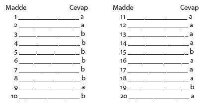

Psikologlar açısından stres, onu zihninde taşıyan kişiye aittir. Hepimiz günlük, basit gözlemlerimizden, aynı olaya farklı kişilerin farklı tepki ve yaklaşımlarının olduğunu biliriz. Bu farklılık zihinsel şartlardan, sosyal şartlara kadar uzanan değişkenlerden kaynaklanır. Hatta biliriz ki, biz bir gün dış ortamdan gelen uyaranlara gülüp geçerken, bir başka gün aynı olaylara sert tepkiler verebiliriz. Bu sebeple stres olgusu incelenirken, stres verici durumlar kadar onlarla karşılaşan bireyin psikolojik özelliklerinin de ele alınması ve değerlendirilmesi önem taşır. Stres ve stres vericilerin insana etkisi söz konusu olunca, insanın psikolojik bütünlüğünü oluşturan düşünce, duygu ve davranışlarını anlamaya, tanımaya gerek vardır.
Stres tepkisi, ortamda ne olduğuna bağlı olarak değil, insanın olana nasıl tepki verdiğine bağlı olarak ortaya çıkar. Hissettiklerimiz esas olarak düşündüklerimiz paralelindedir. Bu sebeple stres belirli insanla belirli olayın etkileşiminde ortaya çıkar. Yani olay tek başına bir belirleyici değildir. Burada kilit nokta, o belirli durum ile o belirli kişi arasındaki işlemdir.
1) Bu insan aynı şartlarda karşılaştığı ilk yaşantısında neler yaşamıştır?
2) Bugün için bu durumla başaçıkma becerisi nasıldır?
Bunlara bağlı olarak oluşan düşünme, hissetme ve davranma biçimimiz insan olarak biricikliğimizi ve olaylarla etkileşim yolumuzu ortaya koyar. Bu biricikliğimizde geçmiş yaşantılarımız ve hayata bakışımız vardır.
• Üç yetişkin çocuğu olan bir babanın vefatını düşünelim. Çocuklarından ikisinin evlenmiş ve kurdukları yeni düzende hayatlarını sürdürdüklerini; diğerinin de evlenmeyip baba ile yaşadığını düşünelim. Bu ölüm olayının, evlatlar için önemli bir stres verici durum olmasına karşın, her üç çocuğu da aynı düzeyde etkilemesi söz konusu olabilir mi?
• Bir arkadaş toplantısına gidecek iki ailenin, çocukları arasındaki tartışmayı yatıştırırken geciktiklerini varsayalım. Aileler aynı tepkiyi mi verirler? Tabii ki hayır. Örneğin bir aile; “Hay Allah gecikiyoruz” diye düşünüp telaşlanırken, bir diğeri, “Bu çocuklar beni çıldırtacak” diye düşünerek, sinirlenebilir.
• Araba kullanmaktan zevk aldığını söyleyen bir insan ile, arabadan nefret ettiğini, zorunluluklar nedeniyle direksiyon başına oturduğunu ve trafikte tükendiğini söyleyen bir başka kişinin işlerinin bittiğini düşünerek evlerine döndükleri bir anda, araba ile bir yere gitmek zorunda olduklarını öğrenmeleri aynı tepkilere sebep olabilir mi? Bu insanların düşündükleri ve hissettikleri aynı olabilir mi? Daha önce de belirttiğimiz gibi aynı olay farklı kişilerde, hatta bazen aynı insanda farklı zamanda, farklı tepkilerin ortaya çıkmasına sebep olabilir. Öyle ise belirli uyarana, belirli tepkiler verilir diye bir genelleme yapılamaz.
Buradaki en önemli ve biricik değişken, bireye özgü farklılıklar gösteren psikolojik mekanizmalardır. Bir olayı algılayışımız ve onunla başaçıkabilecek becerilerimizi değerlendirişimiz, o olayı “stres verici” veya “stres vermeyici” olarak tanımlamamıza sebep olur.
Lazarus zihinsel psikoloji ile ilgili çalışmalarında konunun bu boyutuna ışık tutmuştur. Durumu tanımlamamıza yardımcı olan faktörleri birincil değerlendirme ve ikincil değerlendirme sistemleri olarak ele almıştır.
1) Birincil değerlendirme; yaşanılan durumun algılanması ve kişi için ne anlama geldiğinin değerlendirilmesidir. Bu dönem, yaşantının anlamını keşfetme dönemidir. Bize uymayan bir şeyin olup olmadığına bakarız, durum bizi herhangi bir şekilde etkilemiyor ise nötr bir yaşantıdır, ya da bizim iyiliğimize destek oluyor, bizi koruyor ise olumlu bir yaşantıdır. Stres verici olarak değerlendirmemiz için bu yaşantının bizi zedeleyeceğini, mücadeleye zorlayacağını yani tehdit edeceğini düşünmemiz gerekir.
2) İkincil değerlendirme. Birinci aşamada kişi yaşantıyı stres verici (tehdit edici) olarak değerlendirmiş ise ikinci aşamada olayı yönlendirme ve olay ile başaçıkabilme yolları ile ilgilidir. Artık imkânları ile bu konuda ne kadar etkin olabileceğine bakar. Bu aşamada da başaçıkabilme davranımını yeterli bulmaz, eksik görür ise artık tam bir stres söz konusudur. Kişi psikolojik düzeyde de, bedensel düzeyde de stres tepkisi verir. Yani düşünce, duygu ve davranış düzeyindeki yıkıcı ve olumsuz tepkiler ile birlikte, bedendeki alarm reaksiyonları devreye girer.
Örneğin bir öğrencinin girdiği bir sınavdan zayıf not aldığını düşünelim ve birincil, ikincil değerlendirmeler açısından yaşantıyı izleyelim.
• Öğrencilerin biri “Bu sistem içinde iyi not alsam ne olur, kötü not alsam ne olur. Arkadaşlarımın yarısından çoğu zayıf almış zaten” diye düşünebilir. Görüldüğü gibi burada birincil değerlendirmede olaya bakılmış, anlamı yorumlanmış ve bir tehdit olarak algılanmamıştır.
• Öte yandan bir başka öğrenci “Niçin zayıf aldım, bu başarısızlıklar beni küçük düşürüyor” diyerek birincil değerlendirmede yaşantıyı tehdit edici bulabilir. Çünkü kendi iyilik halinin ve hoşnut olduğu bütünlüğünün bozulduğunu düşünmüştür. İşte o zaman bu öğrencinin ikincil değerlendirmesi iki yönde olabilir. Ya başaçıkma becerileri açısından kendisini olumlu değerlendirir, “Bu defa şu sebeplerle olmadı ama ben bunları değiştirebilirim, nerelerde eksikliklerim olduğunu biliyorum” diyerek değerlendirmesine bir tehdit algısı koymaz, ya da “Ben bu işleri beceremeyeceğim, bu lise nasıl bitecek” şeklinde düşünerek ikincil değerlendirmede başaçıkma becerisi gösteremez ve bu yaşantı hem duygusal dünyasına hem de bedenine bir stres tepkisi verdirecek şekilde yansımış olur.
Sözünü ettiğimiz değerlendirmelerde rol oynayan ve stres damgasını vuran, kişiden kişiye farklı değerlendirmelerin ortaya çıkmasına sebep olan temel özellikler “kişiye özgü psikolojik” özelliklerdir.
Bir durumun birincil ve ikincil değerlendirme sistemleri sonunda tehdit olarak algılanmasında rol alan psikolojik faktörler esas olarak üç açıdan ele alınır:
1) İhtiyaç ve güdüler
2) İnanç sistemleri ve algısal özellikler
3) Eğitim ve bilgi birikimine bağlı zihinsel kaynaklar
Örnek olarak trafikte sıkışan ve randevusuna geç kalan bir kişiyi düşünelim?
1) Bu saatte arkadaşlarımla birlikte olmayı istiyordum (ihtiyaçlarımıza bağlı güdüler).
2) Ben şanssız bir insanım, niyetlendiğim, arzu ettiğim şeyler olmaz (kalıp inançlar, algı değerlendirmesi).
3) Bu şehrin trafiğinde zaten hiçbir yere gidilmez, özenmek hata. “Burası yaşanacak şehir değil” diyor herkes, gerçekten doğru (Şehirle ilgili bilgilerin kendi zihinsel kaynakları çerçevesinde değerlendirilmesi).
Sonuç psikolojik ve bedensel düzeyde zorlanma tepkileridir. Bu sonucun çıkmaması için basamaklardan birinde “tehdit” değerlendirmesinin dışına çıkılması gerekiyor.
Şekil 6: İhtiyaclar Piramidi
Kişinin duygusal yaşantılarındaki duruşunu, ihtiyaçları ve güdüleri (motivation) belirler. Çünkü davranış, yani harekete geçmek, ihtiyaçlardan kaynaklanır ve güdülerle yönlenir. İhtiyaçları karşılayan davranışlar her zaman aynı olmaz. Aynı insan kahvaltı etmek gibi günlük temel bir ihtiyacını karşılarken bile çok farklı güdülere sahiptir. Bir gün büyük bir istekle zevkli bir sofra hazırlarken, bir başka gün bir bardak çayı zor içebileceğimizi hissederiz. Hepimizin bildiği gibi, kişi aynı olduğu halde temel ihtiyacını karşılama güdüleri çok farklı olabilmektedir. Yapılan her hareketin ardında bu harekete yol açan bir güdü (motiv) vardır. Bu güdüler bireysel ihtiyaçlar ve çevreyi algılayışımız ile biçimlenir.
Çeşitli ihtiyaç sıralamalarının varlığına rağmen, bugün psikolojide yaygın olarak kabul gören ihtiyaç sıralaması Maslow tarafından yapılmıştır. Bu sıralamada ilk ve en alt sırayı biyolojik ihtiyaçlar alır. Ancak bu ihtiyaçların tatmin edilmesinden sonra daha üst basamaktaki karmaşık psikolojik ihtiyaçların tatminine yönelmek mümkün olur.
Bu ihtiyaçlar hiyerarşisi algıda en temel unsurdur. Kişinin kendisini gerçekleştirmesine kadar uzanan ihtiyaçlarını aşağı basamaklarından başlayarak doyurması gerekmektedir. Bu ihtiyaçların karşılanmasındaki aksaklık veya gecikmeler, gerçeklerden uzaklaşmaya yol açar. Algı yanılmaları konusunda çeşitli araştırmalar yapılmıştır. Örneğin yemek ihtiyacının tatmin edilmemesinin insanları nasıl etkilediği araştırılmıştır. Bir gruba yemekten 1 saat sonra, bir gruba 4, diğer gruba 16 saat sonra, projeksiyonla perdeye aksettirilen görüntünün ne olduğu sorulmuştur. Gerçekte perdeye hiçbir şey yansıtılmadığı halde üç grup deneğe de: “Perdede silik olarak görülen resimde masanın üzerinde üç şey var. Masanın etrafındaki kişiler memnun görünüyorlar. Acaba bu insanlar ne yapıyorlar?” diye sorulmuştur. Tok olanlar, aç olanlara kıyasla daha çok yemek ile ilgili bir görüntü algılamışlardır.
İhtiyaçların “olanı farklı algılama” veya “olmayanı algılama” yönündeki etkileri psikolojide pek çok çalışma ile tespit edilmiştir. Bu konudaki bir başka araştırmada perdeye belirgin bir görüntü düşürülmeden “Şimdi bir sigara ve bir köfte görüyorsunuz, bunlardan hangisi daha büyük?” diye sorulmuştur. Tok deneklere kıyasla aç deneklerin % 75’i köftenin daha büyük olduğunu söylemiştir.
İnsan dış dünyanın biçimi belli nesnelerini bile, kendi ihtiyaçları yönünde farklı algılamaktadır.
Algılarımız duyu organlarımıza gelen uyarıların zihnimizdeki bir aynaya yansıması değildir. Ne fiziksel özellikleri olarak sıralanan ses, biçim, boyuttur, ne de yüzlerdeki ifadelerin ve kelimelerin videoya kaydedilişidir. Algılarımız bizim bu şemalara verdiğimiz anlamlarla ortaya çıkar. Algılar nesne veya durumun görüntüsel yansımasından farklıdır, bireyin yukarıda saydığımız üç özelliğine bağlı olarak meydana gelir. Algı mekanizması uyaranı pasif olarak alan ve standart bir formda koruyan bir yapı değildir. Duyusal şemalar beyin kabuğunda o kişi için kendi psikolojik özellikleri açısından en “uygun”, en “anlamlı” bileşim içinde yerini alır. Yukarıda da değindiğimiz gibi bir durumun stres olarak değerlendirilmesi, ortaya çıkan şemaların “tehdit” anlamını taşımasıyla gerçekleşir. Stresin psikolojik analizinde anahtar kavram birincil ve ikincil değerlendirmeler sonunda bireyin ihtiyaçlarına bağlı olarak “tehdit” kararının zihinsel düzeyde varolmasıdır.
Algı psikolojisi ile ilgili önemli bir konu da algıda hazırlık ve bu hazırlığa bağlı olarak algının organizasyonudur. Olaylar ve objeler hiçbir zaman “başı ve sonu kendileri ile sınırlı” olarak algılanmamaktadırlar. İnsan dış çevreden gelen uyaranları tek tek alır ve onları bir bütünün çeşitli parçaları olarak birleştirir ve o durumla ilgili bir algı oluşturur. Bu bütünde her insanın kendine özgü ihtiyaçları ve dürtüleri kadar geçmiş yaşantılarla kazanılmış kalıp inançlar ve kalıp yargılar rol oynar. Yapılan çalışmalar önyargıların yani inançlar ve kalıp düşüncelerle ilgili ön hazırlığın algı oluşumunda % 75 rolü olduğunu göstermiştir. Çocuklar, erkekler, ev kadınları, çalışan kadın vb. konularda veya kavramlarla ilgili önyargılarımızın bu durumdaki algı değerlendirmemizde en etkin boyut olduğunu ortaya koymuştur. Yaşanmakta olana bakışımız, yaşadığımızın objektif değerlerinden çok bizim o konudaki inanç ve kalıp düşüncelerimize bağlıdır.
Şekilsel olarak bile bir önceki görüntü bir sonraki görüntüyü kendi paraleline çeker (Şekil 7).
Özet olarak ihtiyaç ve güdülerimiz ile geçmiş yaşantılarımızın oluşturduğu önyargılar, algıda seçiciliği ve hazırlığı belirler. Stres açısından önemli olan o olayın o kişi için “tehdit edici” olarak algılanıp algılanmamasıdır. Bireysel farklar bu psikolojik ayrılıklardan kaynaklanır, ihtiyaçlar ve geçmiş yaşantılar genel geçer değildir, bireye özgüdür.
Şekil 7. Eskiden görmüş bulunduğumuz şeyler yeni algılarımızı etkilemektedir. Yukarıdaki
resimlerden önce B’yi görmuş olanlar, A resmine baktıları zaman bir genc kadın gormektedirler. Önce C’yi görmüş olanlar, ise A’ya bakınca ihtiyar bir kadın görürler.
Önyargıların algıyı belirlemesindeki en temel faktör zihinsel süreçler sonunda ortaya çıkan duygulardır. Stres kuramı içinde duygu “çevre ile insan arasında uyuma yönelik ilişki türlerinden doğan yaşantı” olarak tanımlanır. Duyguların çevreyle (uyaranlarla ilgili) ve insanla (ihtiyaçlar, güdüler ve psikolojik özelliklerle ilgili) etkileşimleri vardır. Olay karşısında ortaya çıkan duygusal tepkilerin tabiatı ve kalitesi bireyin çevre-insan ilişkisini (uyum çabasını) değerlendirme biçimini yansıtır.
Şekil 8’de görüldüğü gibi duyguların ortaya çıkma biçimini belirleyen faktörlerden biri de zihinsel faktörler içinde yer alan geçmiş yaşantılara ait anılardır. Bu anıları, yapılandırarak bireyin duygu oluşumunu belirleyen, kişinin içinde yer aldığı, yaşadığı sistemlerin düşünce biçimleridir.
Örneğin, aile ortamı, çocuğun yetiştirilmesi, aile üyelerinin etkileşimi, anne-babanın görüşleri, yetişkinlerin olaylar karşısındaki düşünce ve tutumları.
Yukarıda duygunun çevre ile insan arasında uyuma yönelik ilişki türünden doğan bir yaşantı olduğunu söylemiştik. Bu uyumun başarılı olması “duygusal denge”yi gerektirir. Böylece haz vermeyen duygu yaşantılarının, haz veren duygularla yönlendirilmesi ve giderilmesi sağlanır. Bu tür bir duygusal denge iki yoldan gerçekleşir.
Bunlardan birincisi hoşa gitmeyen duygularla hoşa giden duyguların yer değiştirmesidir. Bu yer değiştirme belirli bir duruma geçici olarak uyumu sağladığı için sağlıklı bir uyum değildir. Bu yolla sağlanan duygusal denge çoğunlukla çevre baskısı ile olur ve olgunlaşmamış bir kişiliğin ürünüdür.
İkincisi, hoşa gitmeyen duyguları yaratan şartları farklı bakış açılarından görmeye çalışmaktır. Duygusal dengenin hoşgörü ile sağlanması geniş boyutlar kazanmış, olgunlaşmış bir kişiliğin ürünüdür. Duygusal hoşgörünün gelişmesi insan ilişkilerine rahatlık, kişiliğe esneklik ve derinlik katar.
Şekil 8: Zihinsel Bedensel Duygu Teorisi
Zihinsel-bedensel duygu teorisi Şekil 8’de gösterilmiştir. Duygu bu üç kaynaktan gelen bilginin bütünleşmesi ve bilinç düzeyinde yaşanmasını içerir. “Duygunun hissedilmesi” kişinin bu “fark etme”, “uyanma” dönemini saptayıp adlandırmasıdır. Adlandırma, niteliğini (güzel, iyi, rahat, korkunç, engelleyici vb.) zihinsel süreçlerin değerlendirmesinden alır. Bu değerlendirmede de uyaran aynı olmasına rağmen büyük bireysel farklar olur.
Şekil 9: Uyaranı yapılandıran mekanizmalar
Algı bir tehdit algısı ise “değerlendirme” zarar görme, tehdit edilme, mücadele etme duygularını; algı olumlu bir algıysa, rahat, huzur, dengelilik gibi duyguları yaşatır.
Çevreden gelen uyaranların insan organizmasına stres verici olarak ulaşması ve stres tepkilerini başlatan ve genişleten bir özellik kazanması bir taraftan psikolojik, diğer taraftan bedensel mekanizmaların devreye girmeleri ve gösterdikleri faaliyetlere bağlıdır.
Şekil 9’da uyaranın stres verici olarak değerlendirilmesini ve bundan sonra onunla başaçıkmak için yapıcı veya yıkıcı olabilen psikolojik mekanizmalar ile stres verici duruma karşı organizmada mücadele veya korunmayı sağlayacak bedensel mekanizmalar görülmektedir.
Duyguların gelişim özellikleri
Duyguların tanımlanması ve duygusal yaşantılar hayatın ilk yıllarından 5 yaşına kadar hızla artar, 5 ile 11 yaşlar arasında bu artış yavaşlar ve 11-16 yaş arasında yine hızlı bir artış gösterir. Çocukluk duyguları, 1) kısa süreli, 2) yoğun, 3) geçici, 4) aynı duyguda farklı tepkiler ortaya koyan ve 5) zorlanma ile değişebilir niteliktedir.
Olgunlaşma ile birlikte duyguların niteliğinde sabitlik ve dengesizlik yönünde bir değişme beklenir. Duygusal dengelerin sağlanması ve olumlu duygusal yaşantılar içinde olunması konusunda yardımcı teknikler, kitabın “Stresle Başaçıkma Yolları” adlı III. Bölümünde verilmektedir.
Otoyolda kaza yapan araçların sürücülerinin bu olaya tepkileri birbirlerinden çok farklıdır. Tepkilerin farklılığını olayı algılayıştaki farklar kadar, kişilik vasıflarındaki farklar da etkiler.
Şekil 10: Eysenck Kişilik Boyutları
Ebeveynler ortak yaşamları içerisinde çocuklarına karşı, birbirlerine uyan tepkiler vermeyi kararlaştırsalar bile, kişiliklerinden yansıyan üslup farklarının sonucu etkilediği bilinir.
Kişilik, insan yapısının, duygusal durumunun, davranış biçimlerinin, ilgilerinin, yeteneklerinin ve diğer psikolojik özelliklerinin en karakteristik ve orijinal bütünüdür.
Kişilik tanımında ruhsal sürekliliği yansıtan benlik ve çeşitli kişiliklere özgü nitelikleri yansıtan karakter kavramları vardır. Benlik kavramı bireye özgü düşünce, duygu ve idealler ile yetenekleri, karakter ise bu niteliklerin eyleme dönüşmesini ve bireysel farklılıkları içerir.
Kişilik özellikleri ile stres arasındaki ilişki, birçok araştırmacı tarafından incelenmiş ve Eysenck kişilik ölçeği (EPI) ile yapılan değerlendirmeler konuya ışık tutmuştur. Bu ölçek kişiliği çeşitli boyutlardaki özellikleri ile değerlendiren bir ölçektir.
Eysenck, organizmanın kalıtsal ve çevresel şartlarla belirlenmiş olan aktüel veya potansiyel davranış kalıplarının bütününü kişilik olarak yorumlar. Kişilikteki iki ana boyuttan birincisi nevrotiklik, bunun karşıtı olan dengeliliktir; ikincisi dışa dönüklük ve bunun karşıtı olan içe dönüklüktür. İnsanlar bu boyutlardan sadece birinin bir yönünden değil, her iki ana boyut ve karşıtlarını oluşturan çeşitli niteliklerden pay alırlar. Bunlardan biri daha baskındır ve bu sebeple kişiliği belirleme özelliğine sahipti
Bunlardan nevrotik davranışı belirleyen üç temel özellik, nevrotik davranışın öğrenilmiş olması, uyumsuz olması ve yoğun bir duygusal yüke sahip olmasıdır. Örneğin, normal bir insan, becerisini gösterirken zorlanacağı bir işle karşılaştığında çeşitli yollar dener. Bu yollar arasında, “daha farklı ve kolay bir işle ilgilenmek”, sebep uydurarak bu işle “yüz yüze gelmeyi geciktirmek” veya temelinde bu işten kurtulma isteği yatarak “başka bir işe yönelmek” sayılabilir. Nevrotik bir insan, sınırlarını zorlayan bir işle karşılaştığında, bu rahatsız edici durumdan kaçınmak için daha farklı bir yola başvurur. Bu yol, birdenbire ortaya çıkan bir yorgunluk, bir başağrısı, veya işi yapmayı engelleyen başka bir bedensel güçlüktür.
Streslerin somatize[3] olarak organizmaya malolmasını nevrotiklik boyutunun baskınlığı belirler. Fizik veya psikolojik stres altında çeşitli kişilikler farklı risklere sahiptir.
Gündelik çeşitli streslerde dikkatli bir gözlemci kişilik özelliklerine bağlı değişiklikleri kolayca fark edebilir. Stres verici durumdaki tepkiler, kişilik özelliklerine göre korku, kaygı, gerilim veya geri çekilme vb. farklı psikolojik nitelikler olabileceği gibi, terleme, kızarma, kalp atışlarının hızlanması gibi farklı fizyolojik nitelikler de olabilir. Farklı kişiler aynı tepkileri verseler bile, bunların şiddetleri birbirlerinden farklıdır.
Kişinin stresi yaşamaması, kişilik donanımları ve elindeki imkânları kullanabilmesi ile ilişkilidir. Bu sebeple kişisel özellikler stresten korunabilme derecesini de belirler. Bunlar kişinin değişimlere uygun olarak kendini programlayabilme yeteneği (esneklik), çevre gelenekleri ve geçmiş tecrübelerinden elde ettiklerine bağlıdır.
Görüldüğü gibi yeni koşulları kabullenmek, değişim şartlarını görmeye gayret etmek ve esneklik, stresle başaçıkmak konusunda büyük önem taşır. Diğer yandan yukarıda sayılan olumsuz kişilik özelliklerinden biri veya birkaçı insanın uyumunu zorlarsa, bu özelliği tanıması ve onunla başaçıkmayı isteyip istemediğine karar vermesi gerekir. Çünkü bu olumsuz özellikler yanlış bir dengeyle de olsa ikincil kazançlar yoluyla ayakta durmayı sağlayabilir.
Davranış kalıplarının kazanılmasında rol alan diğer faktör, kişinin içinde yaşadığı gruptur. Bireyin sağlıklı başaçıkmak konusunda örnek kalıplar edinmesini sağlayan, içinde yetiştiği ve yaşadığı çevredir. Çevre hoşgörüye dayalı olmayan, önemli ve sıradan olaylar karşısında suçlayıcı, kahredici ve yaşamın bütününü lanetleyen tutumlar ortaya koyabilir. Veya çevre kızgınlığını olayla sınırlı tutabilir ve ondan sonra yapılacaklar ve yapılmayacaklar konusunda aydınlanmaya çalışan bir tutum ortaya koyabilir.
Kişinin yetemediği, eksikliğini fark ettiği durumlarda, olayın yarattığından daha yoğun bir stres ortaya çıkar. Kaygı, depresyon, korku vb. stres sonucunda ortaya çıkan psiko-patolojilerdir. Ama unutmamak gerekir ki, bu patolojiler kişilik özellikleri ile birleşince artabilir veya azalabilir
Çeşitli çalışmalar uyum sağlamayı zorlaştıran bazı kişilik özelliklerinin tanınmasını sağlamıştır. Streslerle mücadeleyi zorlaştıran bu faktörler şöyle sıralanabilir. Düşmanlık duyguları baskın olan kişiler, kendilerine her konuda bir suçluluk payı çıkaranlar, aşırı duyarlı ve duygusal tepkileri önde olanlar. Öte yandan ben merkezci olarak adlandırılan egoist kişilik özelliği baskın olanlar, olayları ya çok iyi, ya da çok kötü bulanlar (“hep veya hiç” kuralı ile hayata bakanlar); çocuksu diye bilinenler (olgunlaşmamış kişilik özellikleri önde olanlar) ve çevreleri ile etkileşimlerinde ve ilişkilerinde yetersiz kalan (pasif) kişiler streslerle başaçıkmakta başarısız olmaktadırlar.
Bu vasıflar ve bunların sebep olduğu davranışlar, stres karşısında insanın uyum sürecini uzatır ve sağlıklı bir dengenin kurulmasını engeller. Dış şartlar sabit değildir ve bunu sabitleştirmek konusunda da elimizden gelen pek bir şey yoktur. Öyleyse şartları çok yönlü tanımak, değişimlere karşı esnek olmak, kendimiz ve çevremiz için en uygunu yaratmak gerekir.
Bu konuya geçmeden önce, inanç ve düşüncelerinizi daha iyi yansıttığına inandığınız cevabı işaretleyin.
1- a) Dersten aldığı not, öğrencinin çalışma derecesine bağlıdır.
b) Dersten alınan not, öğretmenin insafına bağlıdır.
2- a) Terfi etmek, sıkı çalışmanın sonucudur.
b) Terfi etmek doğru zamanda, doğru yerde bulunmakla mümkündür.
3- a) İnsanın seveceği birine rastlaması şans işidir.
b) İnsanın seveceği birine rastlaması çok sayıda insana rastlamaya imkân verecek bir sosyal çevreye sahip olmasına bağlıdır.
4- a) Uzun yaşamak, kalıtımsal faktörlere bağlıdır.
b) Uzun yaşamak, sağlıklı alışkanlıklar kazanmaya bağlıdır.
5- a) Aşırı kilolu olmak, dünyaya getirdiğimiz veya hayatın ilk yıllarında gelişen yağ hücrelerinin sayısına bağlıdır.
b) Aşırı kilolu olmak, ne yediğinize ve ne miktarda yediğinize bağlıdır.
6- a) Düzenli olarak fizik egzersiz yapanlar, günlük programlarını buna göre düzenlerler.
b) Bazı insanların düzenli egzersiz yapmaya zamanları yoktur.
7- a) Pokerde kazanmak, doğru oynamaya bağlıdır.
b) Pokerde kazanmak şans işidir.
8- a) Evliliği sürdürmek, bu konuda gayret harcamakla mümkündür.
b) Boşanmak, yanlış eş seçme şanssızlığının bir sonucudur.
9- a) Vatandaşlar hükümetler üzerinde bir ölçüde etkilidir.
b) Tek başına bir insanın hükümetin faaliyetini etkilemek için yapabileceği hiçbir şey yoktur.
10- a) Bir spor dalında yetenekli olmak, doğuştan getirilen niteliklere bağlıdır.
b) Bir spor dalında yeteneği olanlar, bu yeteneği kazanmak için çok çalışırlar.
11- a) Yakın arkadaşı olanlar, böyle bir dostluk kurabilecek kimselere rastlamış olmaktan ötürü şanslıdırlar.
b) Yakın bir arkadaşlık geliştirmek, bu konuda ciddi olarak gayret harcamakla mümkündür.
12- a) Geleceğiniz kime rastlayacağınıza ve şansa bağlıdır.
b) Geleceğiniz size bağlıdır.
13- a) Bazı insanlar fikirlerinden öylesine emindirler ki, onların düşünceleri değiştirilemez.
b) Mantıklı bir tartışma, çok kimseyi ikna eder.
14- a) İnsanlar hayatlarının yönüne kendileri karar verirler.
b) Büyük çoğunlukla, geleceğimiz konusunda çok az kontrol imkânına sahibiz.
15- a) Sizden hoşlanmayanlar, sizi anlamayanlardır.
b) Biri sizden hoşlansın isterseniz, sizden hoşlanmasını sağlarsınız.
16- a) Mutlu bir hayat yaşamak elinizdedir.
b) Mutluluk kadere bağlıdır.
17- a) Çevredeki insanların tepkilerini değerlendirip, kararlarınızı ona göre verirsiniz.
b) Başkaları tarafından kolayca etkilenme eğilimindesiniz.
18- a) Seçmenler adayların geçmişlerini incelerse, dürüst politikacıları seçebilirler.
b) Politikacılar, politika işinin yapısı gereği dürüst değildirler.
19- a) Anne-babaların, öğretmenlerin ve patronların bir insanın mutluluğu ve hayattan aldığı doyum üzerinde büyük etkileri vardır.
b) Mutlu olup olmamanız size bağlıdır.
20- a) Vatandaşlar tepki verirse, hava kirliliği kontrol edilebilir.
b) Hava kirliliği teknolojik gelişimin kaçınılmaz sonucudur.
Yukarıdaki ölçek Kontrol Odağı Değerlendirme Ölçeği’dir. Oldukça yeni bir kavram olan “kontrol odağı”, hayatınızı etkileyen olaylar üzerinde ne kadar kişisel kontrolünüz olduğuna inancınız konusundaki algınızdır.
Dış kontrol odağına sahip olan insanlar, hayatlarını etkileyen olayları oldukça az etkileyebildiklerine inanırken, iç kontrol odağına sahip olanlar bu olayları etkilemek konusunda kendilerine büyük iş düştüğüne inanırlar.
Kendi kontrol odağınızı değerlendirmek istiyorsanız aşağıdaki her cevap için kendinize bir puan verin.

11 ve üzerindeki puanlar iç kontrol odağını, 10 ve altındaki puanlar dış kontrol odağını işaret eder. Birçok kişi 10’un biraz altına veya üstüne düşer. Ancak sayı 10’un ne kadar altındaysa kişinin duyduğu stresin de o ölçüde artması doğaldır.
Üniversitede yaptığımız bir sınavdan sonra öğrencilerimize, neden kırık not aldıklarını sorduk. Kırık not alan öğrenciler ikiye bölündü. Birinci gruptakiler yeterince çalışıp hazırlanmadıklarını, bu sebeple başarısız olduklarını söylediler. İkinci gruptakiler ise iki çeşit cevap verdiler. Bazıları “Çok zor sordunuz”, bazıları da, “Şanssızdık, çalıştığımız yerlerden gelmedi” dediler.
Oldukça basit ve sıradan bir durum karşısında bile sınıfın böylesine bölünmesi çok çarpıcıydı. Çünkü bu basit olaya verdikleri tepki öğrencilerimizin hayat karşısındaki tutumlarını açıkça ortaya koyuyordu. Birinci grupta yer alan öğrenciler, başarılı olmak için kendi içlerindeki bir kaynağa başvuracaklar ve daha çok çalışacaklardır. Bu öğrenciler sonucu beceri ve gayretleriyle değiştireceklerine inanmaktadırlar. Buna karşılık, ikinci grupta yer alan öğrencilerin başarılı olabilmeleri için, kendi dışlarındaki faktörlerin yardımına ihtiyaçları vardır. Bu öğrenciler başarılarını öğretmenin kolay sorması ve şanslı olup çalıştıkları bölümlerden soru çıkması gibi bütünüyle kendi kontrolleri dışındaki faktörlere bağlamaktadırlar.
Yapılan araştırmalar başarı güdüsü yüksek olanlarla düşük olanlar arasındaki en temel farkın başarı ve başarısızlığın sebeplerini yorumlamada görüldüğünü ortaya koymaktadır. Başarı güdüsü yüksek olanlar sebepleri kendi dışlarında değil, içlerinde aramaktadırlar. Böylece zihinsel ve duygusal enerjilerini kendi dışlarındaki değil, kontrol edebilecekleri kendi içlerindeki faktörlere yöneltirler.
Geleneksel Türk kültürü bu açıdan ne yazık ki, kontrol odağı dışarda insanlar yaratmaktadır. Çok küçük yaştan başlayarak yaratıcılıkları ve orijinallikleri bastırılan çocuklar yetiştirilmekte, çocuklara verilen sevgiye, çok yüksek düzeylerde “müdahale” eşlik etmektedir. Anne-babalar çocuklarının yaptıkları her şeye karışmakta ve onları yönlendirmektedir. Bu müdahaleler ya çocuğu mükemmelleştirmek için eleştiri biçiminde olmakta veya “yaramaz”lığını önlemek için usluluğu (bir başka anlamda pasifliği ve hareketsizliği) sağlamaya yönelik olmaktadır. Böylece anne-baba yanında uslu, onlar olmadığı zaman saldırgan çocuklar yetişmektedir. Anne-babalar terliğini giymesinden dişini fırçalamasına; yemeğini yemesinden dersini çalışmasına kadar çocuklarını kontrol altında tutmak zorunda kalmaktadırlar.
Sürekli dış bir odak tarafından yönlendirilen çocukların büyüdükleri zaman Türkiye’de, dünyanın en disiplinli ordusunu ve en disiplinsiz trafiğini yaratmalarına şaşmamak gerekir.
Bir problemle karşılaşan kişi şartlardan şikâyet etmek ve hayıflanmak yerine, duygusal ve zihinsel enerjisini problemi nasıl çözeceğine yöneltirse, hem stresini azaltır, hem de başarılı olma şansını artırır. İnsanın dünyayı ve şartları değiştirmek yerine kendisini değiştirmeye gayret etmesi çok daha kısa zamanda olumlu sonuçlarını verir. Kişi sebepleri dışında değil, içinde ararsa, sonucunu değiştiremeyeceği durumları kabul eder ve problemi çözecek yeni alternatif yollar arar.
İnsan, hayatıyla ilgili ne kadar çok sorumluluk alırsa ve hayatın kontrolünü elinde tutmak için çaba harcarsa, kendi etkinliği artar, şansın rolü azalır. Cehalet ve güçsüzlük şansa olan inancı artırır.
Kontrol odağı dışarda olanlar, hayatlarıyla ilgili sorumluluk almak konusundaki gayretlerin “yararsız” olduğuna inanırlar.Yapılan araştırmalar, cezaevlerindeki tutuklulardan dış kontrol odağına sahip olanların bulundukları kurumla, hastanede yatan hastaların da kendi sağlık durumlarıyla ilgili daha az bilgiye sahip olduklarını ortaya koymuştur.
Bir başka grup araştırmacı, şişmanlık ile dış kontrol odağı arasında bir ilişki bulmuştur. Kilo problemi olanlar kendilerini kontrol etmekte zorluk çekmekte ve daha çok yemeğin görünüşü, kokusu gibi dış ipuçları tarafından yönlendirilmektedirler. Kontrol odağı içte olanların, önlerine yemek konduğu için değil, acıktıkları için yedikleri saptanmıştır.
Benzer şekilde sigara içenler arasında da dış kontrol odağına sahip olanların çoğunlukta olduğu bulunmuştur. Onlar da sigarayı bırakamayacaklarına veya bunun sağlıklarını söylendiği kadar çok etkilemeyeceğine inanmaktadırlar. “Soluduğumuz hava zaten kirli değil mi?” veya “Sigara içmediği halde kanser olan yok mu?” sözleri bu konudaki yaklaşımlara örnektir.
Stres karşısında kadın ve erkek
Yapılan araştırmalar kadın ve erkeklerin stres tepkilerinde aşikâr farklar olduğunu ve bu farkların çocukluk döneminde daha açık olarak gözlendiğini ortaya koymuştur. 1978 yılında Londra’da yayınlanan bir bültende, erkek çocukların çeşitli stresler karşısında kız çocuklardan daha çok saldırganlık gösterdikleri, buna karşılık kız çocukların stres karşısında daha çok kaygı ve çökkünlük gösterdikleri bildirilmiştir.
Orta yaş döneminde, geri çekilme veya bastırma mekanizmaları devreye girerek cinsiyetlere ait bu özelliklerin çarpıcı olarak görülmesini güçleştirmektedir. Özellikle saldırgan tepkiler, araştırmaların yapıldığı ülkelerde uyarandan bağımsızlaşarak farklı boyutlarda gözlenmektedir.
Birçok konuda olduğu gibi zekâ ve stres arasında da iki yönlü bir ilişki vardır.
“İnsanın düşünme yeteneğinin bütünü” onun zekâsı olarak ele alınırsa, stresten etkilenmek veya strese karşı koyabilmenin, önemli ölçüde yüksek bir zekâ ile doğru orantılı olduğu düşünülebilir. Öte yandan yüksek stres ortamı insanların rahat ve doğru karar vermelerini, zihinsel potansiyellerini en üst düzeyde gerçekleştirmelerini engeller. 1970’li yıllarda S. Begab ve arkadaşları bedensel, psikolojik veya sosyal streslerin kişinin zihinsel kapasitesini ve buna bağlı olarak da çevresinin isteklerini başarılı bir şekilde karşılayabilme yeteneğini etkilediğini ortaya koymuşlardır.
Yüksek ve sürekli stres ortamı, zihinsel etkinlikleri üst düzeyde ve verimli bir biçimde sürdürmeye hem doğrudan, hem de duygu ve davranışlarda meydana gelen aksamalar sebebiyle dolaylı olarak engeller.
Keirn, duygusal bozukluğu olan ve zihnen geri çocukların aile ortamlarını ele almış ve bu açılardan normal çocuklara sahip olan aileler ile kıyaslamıştır. Hasta çocukların ebeveynlerinin kişilik faktörlerindeki patolojik puanları, hasta olmayan ebeveynlerinkine kıyasla anlamlı ölçüde yüksek bulunmuştur. Bu aileler problemleri çözümlemek, pratik çözümler bulmak açısından da başarısız olmuşlardır.
Organizmanın stres tepkisi, daha önceki pek çok tanımlamada da belirtildiği gibi, bir uyum belirtisidir. Öte yandan zekânın çok çeşitli tanımları arasında “yeni durumlara ve uyaranlara uyabilme yeteneği” vardır. Bir başka ifadeyle zekâ, yaşanan olaylarda, akılcı davranış sürecini organize eden bir sistemdir.
Zekâ stresi alteder
Zihinsel değerlendirmeyi yürüten etkinlikleri “yalın” ve “karmaşık zihinsel süreçler” olarak iki alt gruba ayırabiliriz. Yalın zihinsel süreçler tanıma, algı, dikkat, vb.; karmaşık zihinsel süreçler, kıyaslama, yorumlama ve değerlendirmedir.
Bunlardan birincisi anlama, diğeri cevaplama sistemleridir. Her birey kendi potansiyelini geçmiş yaşantıları ile destekler, farklı sonuçlar çıkarır ve dolayısıyla farklı uyumlar gösterir. Organizmanın bedensel düzeydeki uyumu ne kadar türe özgüyse, psikolojik düzeydeki uyumu o kadar toplumsal düzene ve bireye özgüdür. Kişinin kendisini dış tehdit ve zararlardan korumak ve kurtarmak için göstereceği zihinsel ve davranışsal gayret, potansiyel olarak kendisinde var olan yetilerini kullanabilme becerisine bağlıdır.
Genetiğimiz ve geçmiş yaşantılarımız belirlenmiş ve sabittir. Ancak var olan potansiyeli en üst düzeyde geliştirme ve kullanabilme şansı bize aittir.
Başarı, stresli ortamlarda zihinsel organizasyonun öncelikle bireysel bütünlüğü, ardından da yakın çevre ilişkilerini koruyucu ve kollayıcı yaklaşımları sağlayabilmesidir. Kısacası stresle karşılaşan kişi önce kendini, sonra da yakın çevresini koruyup kollayabilmelidir. Streslerle başaçıkmak konusunda zihinsel açıdan etkinlik göstermek için kitabın “Zihinsel Düzenleme Teknikleri” bölümünden yararlanabilirsiniz.
Geçmiş Yaşantıların Streste Rolü
Başlıkta yer alan “geçmiş yaşantılar” ifadesinde özellikle çocukluk dönemi yaşantıları kastedilmektedir. Çünkü bu ilişkiler gelecekteki pek çok ilişkinin ana kalıplarını oluştururlar. İlk yıllarda bağımlılık ve gelişim sürecinin kendisinde var olan stresler iki açıdan değerlendirilir. 1) İç stresler, 2) Dış stresler.
İç stresler (Internal stresses): Bir başka stres sınıflamasında “gelişimsel stresler” olarak da ele alınan streslerin özellikle ilk yaşlara ait olanlarıdır. Bunlar yaşamın ilk yıllarında, uyuma güçlükleri, beslenme bozuklukları ve arkaik[4] (archaic) olarak adlandırılan korkulardır. Belirleyici nitelikleri, yaşanılan döneme özgü psikolojik özelliklerin normal sınırları aşan ölçüde zorlayıcı olmasıdır.
Dış streslerden bir ölçüde kaçınılabildiği halde iç streslerden kaçınmak mümkün değildir. Çünkü çocuğun gelişim ve olgunlaşmasından kaçınmak söz konusu olamaz. Bunlar yetişkin yaşamındaki patolojilerin oluşumundan tamamen farklı olup şiddetli olmalarına rağmen geçicidirler ve meydana çıktıkları gelişim döneminin bitmesi ile birlikte geride kalırlar. Bu tür patolojilere örnek olarak, uyku ve beslenme problemleri, karanlıktan korkmak gibi sebebe bağlı olmayan korkular verilebilir.
Çocukluk döneminin bu patolojileri, bazen şikâyetlerin doğru kaydedilememesi, bazen de teşhisin doğru konulamaması sebebiyle diğer patolojilerle sıkça karıştırılmaktadır. Böylece dış streslerden kaynaklanan veya genetik olan bazı patolojilerin zamana bırakılarak geçmelerinin beklendiği görülmektedir. Bu konuda verilebilecek örnekler çoktur. Ancak burada kekemelik gibi konuşma bozukluklarının, tırnak yemek ve diş gıcırdatmak gibi davranış bozukluklarının ve kâbuslu rüyaların gelişimsel nitelikli iç streslerden olmadığını belirterek geçelim. Bu sebeple, böyle problemlerin zamana bırakılarak kendiliğinden çözümleneceğini beklemek –bazı durumlarda uzman tavsiyesi olsa bile– doğru değildir.
Aşağıda bebekle ilk tanışan birçok aileyi ilk yıllarda bir hayli zorlayıcı iç streslerden başlıcaları sıralanmıştır.
Uyuma güçlükleri
Bebek uykularıyla ilgili olarak kitaplar, “Bebek doğumdan sonraki birkaç ayda ve özellikle ilk yılda bedensel olarak herhangi bir ihtiyacı yoksa, acı veya bir huzursuzluk hissetmiyorsa rahatça uyur,” diye yazar. Buna rağmen bazen başlangıç böyle olsa bile, aynı çocuk bir süre sonra uykuya karşı adeta savaş açar, yorgunluğuna karşın yatağı protesto eder veya süresi belirsiz olan zamanlar için diğer kişilerin kendisine eşlik etmelerini ister.
Doğal olarak hayatın başında uyku ritmi gece ve gündüze denk değildir. Bu temel gerçekle, doğumdan sonraki dünyanın gerçeklerinin uyuşması sağlanmalıdır. Bu çocuk benliği, analitik dilde, “iç enerji ve obje dünyalarının henüz birbirlerinden bağımsızlaşmaması” olarak tanımlanır. Bir başka ifadeyle çocuk-obje ilişkisinin bağımsızlaşarak kuvvetlenmesi, libidonun geri çekilmesini sağlar ve böylece uyku için önkoşul tamamlanmış olur. Biyolojik ritm ile sosyal ritm arasındaki uyumun kurulamamasının nasıl bir stresi de beraberinde getireceği dış stresler bölümünde örneklenmiştir.
İç stresler olarak adlandırılan gelişim dönemlerine bağlı, yaşamın özünde yer alan zorlanmaların iyi tanınması büyük önem taşımaktadır. Bu güçlüklere karşı koyabilmek ve konuyu “problem” durumuna getirmeden çözmek böylece mümkün olabilir.
Beslenme zorlukları
Bir patolojinin bulunmaması halinde otonom veya yarı otonom faaliyetler doğum sonrasında kendini hissettirmeden sürdüğü halde, dışa bağımlı olan iç dengelerin sağlanması problem olabilir ve iç stresleri oluşturabilir.
Beslenme de bu tür streslerden biridir ve bağımsız yemeğe geçene kadar çok çeşitli beslenme bozuklukları söz konusu olabilir. Bu konudaki ilk sıkıntı annenin meme vermesi ile başlayabilir. Çünkü bu dönemde bebek için olduğu kadar anne için de önemli değişiklikler yaşanır. Bunlar hem bedensel, hem psikolojik açıdan önemli değişikliklerdir. Küçük aksaklıklar istenmeyen büyük sonucu çok çabuk doğurur. Doğumdan sonraki beslenme, rahim içi beslenmeden farklı bir beslenmedir. Pek çok sistem faaliyete katılır. Çeşitli bedensel ve psikolojik gelişim basamaklarının tamamlanması yetişkin beslenmesine geçiş için yeni bir adımı oluşturur. Çocuğun temel ihtiyaçları için özellikle ilk üç yaşta doğru ve tam beslenmenin ebeveyn kontrolünde yapılması gerekir. Öte yandan bazı durumlarda bebeklerin ve çocukların bu temel ihtiyaca çok ciddi karşı koydukları görülebilir. Çocukluk dönemindeki bu tür yemek yeme problemlerinin yetişkinlik dönemindeki iştah ve mide ile ilgili nevrotik sıkıntılara bir zemin hazırladığı öne sürülmektedir.
Arkaik korkular
Kişiliğin oluşumu ile birlikte ortaya çıkacak olan kaygıdan önce çocuklar, “bir erken kaygı dönemi”nden (earlier phase of anxiety) geçerler. Temelinde hiçbir korkutucu olay bulunmadığı için bu tür kaygılar genellikle “arkaik” (archaic) kaygı olarak anılırlar. Bebeklik döneminin ardından ilk çocukluk döneminde görülebilen bu korkular genellikle karanlık, yalnızlık, yabancılar, yeni ve alışılmamış durumlar ve bazen de rüzgârdır. Ana-babalar tarafından bu korkuların sebepleri tespit edilemediğinden ev içinde zaman zaman kızgınlık ve mücadele doğurabilirler. Bu korkular yeni bir düzenleme gerektirdikleri için ve yoğunlukları sebebiyle çocukların bakımıyla yükümlü kişileri de sıkıntıya düşürürler. Aktüel bir sebebe dayanmayan bu korkular, “tam yapılanmamış bir benliğin belirsizlikler yaratan koşullardan kaçınması” olarak tanımlanır. Bu sebeple de analitik bakış açısından, “olgunlaşmamış bir ego zayıflığı” şeklinde değerlendirilir.
Dış stresler (External stresses): Bebekler ve çocuklar kendilerine bakma yeterlilikleri olmadığı için dışardan sağlanan bakımla ve kendilerine verilenle yetinmek zorundadırlar. Bunun bebek için gerekli ve istenilen düzeyde olmaması, çok sayıda ve çok farklı bozuklukların ortaya çıkmasına sebep olur.
Bu bozukluklar önceleri iç streslerin karşılanmasındaki sosyal zorlanmalardan doğar. Yani çocuğun doğal eğilimleri, kültürel ve sosyal alışkanlıklarla veya ebeveynin hoşgörü ve becerisi ile dengelenemeyince kendini gösterir.
Örneğin, hayatın başlangıcında bir iç stres olarak varolan uykuyu ele alalım. Belirtildiği gibi uyku ritmi gece ve gündüze denk değildir. Burada gereken, bebeği hırpalamadan dengenin onun iç ihtiyaçlarına göre kurulabilmesidir. Organizmanın başlangıcındaki bu iç stres çeşitli durumlarda bir dış strese dönüşmektedir. Düzenin kurulması gereken ilk aylarda 1,5-2 saatlik mama arası uyanıklıklarından sonra sakin bir uykuyu sağlamak ve giderek artan bir uyanıklığa eşlik eden uykuyu 10-12 saatlik gece uykuları ile birkaç saatlik sabah ve öğle uykuları olarak 24-30 aylara kadar sürdürmektir. Ardından da fizik gelişimin, en önemlisi sinir sistemi gelişiminin tamamlanacağı yaşlara kadar (esas olarak ilk yedi yılda) vakitli ve uzun, gece uykularının sağlanabilmesidir.
Bu sağlanamadıkça dış çevreden gelen olumsuzluk artacaktır. En aşırı durumlarda çocuk ya uyuması için yatağında terk edilecek, yatakta bebeğin mücadelesi ve ağlama krizleri başlayacak veya ebeveyn bu uyumu sağlama tutumunu sürdüremediği takdirde olayı kendi akışına terk edecek, o zaman da bebekler geç saatlere kadar kucakta kalacaktır. Daha sonraki yıllarda da kendilerine zararlı TV programları zorunluluğu ortaya çıkacaktır.
Birçok ailede durum yukarıda anlatıldığı kadar ümitsiz olmasa da, bu zorlukları derece derece yaşayanların sayısı hiç de az değildir. Aynı şekilde beslenme ve korkular, ana-babanın değerlerindeki kararsızlık ve çatışmalar veya yeterli bilgi, beceri ve hoşgörü sahibi olmamalarıyla aşılması güç bir dış stres kaynağı oluşabilir.
Erken yaşantılar açısından en önemli olan, anne-baba ve çocuğun yetiştirilmesine katılan diğer kişilerin, ortak bir kararlılık noktasında buluşmalarıdır.
Çocuğun yemek ve uyku gibi ilk ihtiyaçlarının elverişsiz ve gereksiz şekilde karşılanması patolojik gelişmelere yol açar. Örneğin çocuğun ana babasının yatağında uyuması, yemeğini eğlendirilmeyi bekleyerek ve püre haline getirilmeden yemeyi kabul etmemesi gibi.
Çevreden kaynaklanan patolojilerde, dış şartları düzenleyerek değiştirmek bir dereceye kadar mümkün olsa da çok kere bu aksaklıkların sağlıksız sonuçlarını bütünüyle ortadan kaldırmak mümkün olmayabilir. Örneğin çocukluktaki problemleri davranış düzenleme teknikleri ile çözülmüş birçok kişinin, yetişkinliklerinde bazı konularda bu izleri taşıdıkları görülür.
Sonuç olarak, bazı durumlarda ihtiyaçların sağlıklı olarak karşılanamaması, aynı zamanda bir engellenme duygusunun ve üzüntünün yaşanması anlamına gelir.
Bütün bu engellenme ve üzüntüler de zihinde bir iz bırakır. İşte erken yaşantılar denilen ve gelecekte dünyaya bakış açımızı belirleyen de önemli ölçüde bunlardır.
Çocuk bağımsızlık ve kendisine güvenme yolundaki gelişmeyi kazanmak için annesini ya kabul edici ya da yoksun bırakıcı bir model olarak benimser ve bu modeli kendi benliğinde (egosunda) taklit ederek yeniden yaratır. Anne, çocuğun ihtiyaç ve isteklerini ne ölçüde anlar ve doyum sağlayabilirse yetişmekte olan yeni bireyin de benliğinin hoşgörü kazanma ihtimali o ölçüde artar. Fakat ana-babanın çocuğun doyumlarını geciktirmesi, yadsıması ve yok sayması, çocuğun içinde bir çatışma başlatır. Bu tür çatışmalar da genç ve yetişkin hayatındaki nevrotik yapıya zemin oluşturur.
Temel ihtiyaçlardan karmaşık ihtiyaçlara geçildikçe sosyalleşme süreci hızlanır, uyumsuzluklar varsa sorunlar çoğalır.
Erken yaşantılara bağlı stresler, sosyal gelişimin sağlandığı, sosyal ve ahlaki değerlerin kazandırıldığı dönemlerde ortaya çıkar.
Psikolojik kimlik ve sosyal kurallar konusundaki temel eğitim, evde anne ve babanın birbirleri ve çocuklarıyla olan ilişkilerinin niteliği tarafından belirlenir.
Erken dönemde yaşanacak dış stresleri en aza indirebilmek için çocukluk döneminin hangi ihtiyaçlarına, hangi biçimde yaklaşmak uygundur? Hangi davranışlar ve yöntemler kişide olumlu bir arayışa dönük pozitif dürtüyü yaratır ve geliştirir? Bu konudaki esasları şöyle özetleyebiliriz:
Sağlıklı psikolojik gelişim esas olarak, duygusal ihtiyaçların doğru tanınması ve doyurulması ile sağlanır. Duygusal doyumun sağlanması güven, sevgi, anlaşılmak, yaşanılana katılmak ve paylaşım ile gerçekleşir. Duygusal doyumu sağlayacak bu faktörler en uygun ölçüye yakın gerçekleştiği oranda sağlıklı psikolojik gelişimin temelleri kurulmuş olur. İhtiyaçların doğru tanınması ve doğrulanmasındaki ölçünün bulunmasının pek kolay olmadığı muhakkaktır. Bir örnek olarak “sevgi” faktörü ele alınabilir. Pratik uygulamada, hatta günlük gözlemlerimizde ana-babaların çocuklarıyla ilgili bir problemi aktarırken sebeplerini de açıklamak istedikleri görülür. Konuya ilişkin sevgi ile ilgili bir yorum yapılırsa, bu yorum çoğunlukla “belki fazla sevildi de ondan böyle oldu” şeklindedir. Oysa gerçekten bir hata yapılmışsa, bu fazla sevgiye değil, YANLIŞ sevgiye bağlıdır.
İlk yaşantılarda doyum sağlanması sağlıklı ilişkiler temelinde mümkündür. O zaman akla, yetişmekte olan çocuklarla sağlıklı ilişkiler kurup geliştirmenin prensipleri nelerdir sorusu gelmektedir.
Bunlardan birincisi dinleyebilmek, ikincisi duygu ve düşünceyi tanımaya yardımcı olacak etkinlikleri organize etmektir.
Dinlemek
Amaç, “istenilenin yapılması, büyüklerin programladığı gibi davranılması konusunda mücadele vermek” değil de, çeşitli konularda anlaşmaksa, anlaşmaya varmanın yolu anlamaktan geçer. Anlamak için ise “dinlemek” gereklidir. Doğru ve tam anlayabilmek, iyi bir dinleyici olmayı gerektirir. “İlişki içerisinde dinleyici olmak”, söylenmesi kolay, uygulanması zor bir yaklaşım biçimidir.
Çoğu kez çocuklar birinci cümlelerini söylerken büyükler ne demek istediklerini anlarlar ve hatta onları tamamlar veya bitmemiş cümlelerini cevaplandırırlar. Belki çocuk da gerçekten karşısındakinin düşündüğüne benzer şeyler söyleyecektir. Ama bir kelime eksik, ama bir kelime fazla; veya farklı bir tonlama… İşte çocuğun veya karşımızdaki insanın bizden farklı olan yanı budur. Özellikle hayatın başlangıcındaki birey adına onun düşündüklerini, hissettiklerini, yapmak istediklerini, bildiğimiz şeyler olarak kabul etmek, onu tanımak ve yaklaşmak konusundaki en temel şansı kaybetmeye sebep olur. Özellikle ana-babaların sağlıklı iletişimi başlatabilmeleri için ifadelerdeki farklı duygu ve hissedişleri yakalamaları gerekir.
Duygu ve düşünceyi tanımak
Kurulacak olumlu iletişimin birinci şartı önem vererek dinlemek ise, ikinci şartı da düşünce ve duyguların açıklanmasına yardımcı olmaktır.
Stresin yaşanmasında geçmiş yaşantıların rolünden söz ederken özellikle çocukluk dönemi yaşantıları kastedilmektedir. Ana-baba-çocuk üçgeni içinde psikolojik doyumun sağlanması, hiç şüphesiz bütün aile bireyleri için olumludur. Ama insanlık ve toplum olarak istenilen doğrulara yaklaşmak için, yetişmekte olanlara daha fazla özen göstermek gerekmektedir. Duygu ve düşünceleri tanımaya yardımcı olan ilişki biçimlerinin özelliklerini açıklamadan önce, olayın somutlaşmasını sağlayacak bir örnek verelim.
Çocuk:
“Arkadaşım Ali merdivenlerden inerken beni itti,” derse, çocuğun o andaki duygularına yaklaşmak için, “Merdivenlerden inerken seni Ali itti mi?” şeklinde onun cümlesini soru cümlesine çevirerek yansıtmak ve gelecek yeni düşüncelerle açmak, çocukla aranızda sağlıklı bir iletişimin başlaması için yararlı olacaktır. Halbuki genellikle bizlerin bu gibi konularda bilgimiz ve bir kararımız vardır.
Karşımızdakilerin bizim hakkımızda bu tür genellemeler yapmalarından hiç hoşlanmayız. Buna rağmen, özellikle çocuklarımıza karşı öyle davranıyorsak aramızda istenmeyen bazı duyguları beslemeye başlıyoruz demektir.
Nelerdir bu istenmeyen duyguları besleyecek konuşma biçimleri?
“Sen zaten hep böyle ilişki kurarsın.”
“Bu Ali çok yaramaz bir çocuk.”
“Arkadaşlarınla itişip kakışmandan bıktım.”
Bazen de çocuğu koruyacak bilgiler verdiğimizi düşünerek;
“Merdivenlerde oyun olmaz, kaç kere söyledim, bu çok tehlikeli.”
“İtişip kakışırken düşersin, kafan patlar, hastanelik olursun.”
Bazen bu tür cümlelerin bir de “Karışmam ha!”ları vardır.
“Sizin ikinizin oynamasını zaten hiç sevmiyorum, hep kendinize zarar verecek şeyler yapıyorsunuz.”
“Kaç kere söyledim şu Ali’ye uyma diye.”
Halbuki çocuğumuz bize bir yaşantısını getirmiş ve demişti ki,
“Arkadaşım Ali merdivenden inerken beni itti.” Bu yaşantının duygu ve düşünceleri nelerdi? Acaba bizim yukarıda sıraladıklarımızdan biri mi?
Bizim bu tür yaklaşımlarımız yenilere ve anlamalara açık değildir. Bunlarda hep hesap sorucu, suçlayıcı, denetleyici ve yadırgayıcı, çocukla bütünleşmeyen, engelleyici bir tutum hâkimdir.
Unutmamak gerekir ki insanların, özelikle de her konuda açıklama ve cevap arayan çocukların iyi bir dinleyiciye ihtiyacı vardır. Öncelikle bunu başarmaya çalışmak gerekir. Bu da bilgi, zaman, beceri gerektirir.
Duygusal tıkanmaları yaratmadan, yani olaylar stres kaynaklarına dönüşmeden önce onları çözümleyebilmenin dört şartı vardır. Bunlar ilişkilerde empati,[5] saygı, saydamlık ve somutluktur. Hayatın ilk yılları 0-7 yaş, temel davranış kalıplarının, sağlıklı ilişki biçimlerinin oluştuğu yıllardır. Şimdi çocuklarımızla duygusal zenginliği yaşamanın, olumsuz ve yıkıcı duyguların beslenmesini önleyerek psikolojik streslerden uzak durmanın bu şartlarını biraz daha yakından tanıyalım.
Empati
Karşımızdakinin dünyasını sanki kendi dünyamızmış gibi ama –eğer öyleyse– niteliğini kaybetmeden hissetmektir. Çocuğumuzun duygularını, duygularının yoğunluğunu anlama ve algılama yeteneğidir. Çocuğun duygularını algılayarak hissedebilmek, bizi onun dünyasından, onun gözüyle dışarı baktıracaktır.
Empatiden yoksun ilişkilerin zararı nedir? Empatiden yoksun ilişkiler çatışma doğurur. Çocuktan gelenler ile dışarıdan istenen, olması gerekenler birbirlerinden bağımsız kalırlar. Çocuğun istekleri başka, kurallar başka bir mekanizmayı çalıştırdığında, kurallarla isteklerin çatışması başlar.
Empati bağı bu temel iç çatışmanın oluşmasını engeller. Böylece çocuk benliğini geliştirerek streslere karşı çözümleyici, çabaya yönelik bir ego yapısının oluşmasına yardımcı olur.
Saygı
Bu kavram karşımızdaki bireyleri bağımsız, farklı ve biricik olarak görmemizi ifade eder. Saygı geleneksel olarak başkasını kabul ve takdir etme fikrini iletmek anlamında kullanılır. Saygı kavramı konumuz içinde “ana-babanın çocuklarını her yönü ile kabul etme yeteneği” olarak kullanılmaktadır. Anne ve babalar çocuklarının ayrı bir birey olarak, düşünce, duygu ve davranışlarında özgür olduğunu kabul etmelidirler. Bu, duygusal tatmini, dış streslere karşı güçlü olmayı ve giderek de psikolojik sağlığı korumayı temin edecek ilkelerden biridir. Saygı, sıcak ve kabul edici bir tutum içerisinde olmak, diğerine ve O’na değer vermektir. Bu özelliğin aile ortamındaki varlığı çocukta benlik kavramını geliştirir ve benlik saygısını oluşturur.
Benlik saygısının gelişmemesi hem olumsuz bir iletişimin, hem de kapalı aile sisteminin sebebi ve sonucudur. Duygu ve düşüncelerine saygı gösterilmeyen çocuk yanlış yapınca (bu yanlışlar kazalar dahi olabilir), benlik değeri ile ilgili olumsuz duyguları çok çabuk gelişir. Düşük benlik bilincine sahip kişiler, özellikle çocuklar, yetenekleri ve becerileri oranında başarı sağlayamazlar.
Düşük benlik algısı eğitim başarısını da olumsuz etkiler. Zira düşük benlik algısının, öğrenmedeki katılım ilkesini engellediği bilinmektedir. Olumlu benlik algısına sahip çocuklar, diğer gruba kıyasla yüksek merak düzeyine sahiptirler. Bu onların katılımını sağlayan en önemli özelliktir.
İşte bütün bu sebeplerle “saygı”, genellikle toplumumuzda ele alınış biçiminden farklı olarak, soyut ve küçüklerin büyüklerine göstermeleri gereken davranışlardan daha geniş anlamda bir ilişki biçimidir.
Saygı, benlik kavramını geliştirici ve yapılandırıcı özelliği sebebiyle özellikle çocuklardan beklenmeden önce, onlara tanıtılması ve verilmesi gereken bir olgudur.
Saydamlık
İlişkilerdeki saydamlık, insanın temel psikolojik ihtiyaçlarından birisi olan güven duygusunu yapılandıran ve geliştiren bir özelliktir.
Çocuğun en temel ihtiyacının sevgi ve güven duygusu olduğu öteden beri bilinmektedir. Ama acaba bunlardan güven duygusunu yaşamak ve yaşatmak için hangi çabaları harcamalıyız?
Saydamlık; doğruluk, dürüstlük, açıklık, içtenlik anlamlarına gelir. Duygu ve düşüncelerimizdeki açıklıktır. Saydamlık, hissedilenlerin, yaşanılanların “gerçeğini” konuşmak ve paylaşmaktır. Bu gerçek olması gerekenlerin ve kalıpların dışındaki, içinizde hissedilen ve yaşanandır. Bunlar okunurken veya konuşulurken insana çok doğalmış gibi görünür, ancak uygulamada bu saydamlıkla karşılaşmak pek zor olur. Çünkü insanlar birbirleriyle ilişkilerinde büyük çoğunlukla hissettiklerini değil, o durumda hissedilmesi uygun olanı karşılarındakine yansıtırlar.
Çocuklarımızla olan ilişkilerde saydamlığın sağlanması yaşanılanların özelliğine göre farklılaşır. Çünkü böyle bir ilişkide önde olan çocuğun gerçeğidir. O gerçekler de bizim zihnimizdekinden daha geniş, daha dar veya farklı olabilir. “Saydamlık, kendi duygularımıza ve ilişkinin oluşturduğu tüm duygulara açık olmaktır”. Karşımızdaki insanlarla ister çocuk, ister yetişkin olsun kişisel temelde buluşmaktır. Saydamlık ilişkilere duygusal zenginlik ve dürüstlük getirir. Böylece tanımayı ve tanınmayı sağlar. Güven duygusu insana özgü kişisel temelde tanınır, beslenir ve gelişir.
Somutluk
İlişkilerin sağlıklı bir zemine oturtulması, duygu ve düşüncelere “keskinlik ve sabitlik” kazandırır. Anne-baba-çocuk ilişkisindeki somutlaştırma stres doğurucu psikolojik ortamı engeller. Belirsiz, göreceli genellemelere kesinlik kazandırır. Ana-babanın çocuğuna, doğru, güzel ve iyiyi tanıtırken, genellemelerden uzak, belirgin ifadeler kullanması ve çocuğunu da anlatımlarını somutlaştırma yönünde güdülemesi çok yararlıdır.
Bununla beraber, “ancak sağlıklı bir insan duygularını sağlıklı olarak somutlaştırabilir” dememek ve bu konuda çaba harcamak gerekir. İlişkilerdeki somutluk, bir olay veya bir davranış karşısında duyguların hemen ve genellemesiz yansıtılmasıdır.
“Ben duygularımı açıkça ve en belirgin şekilde ifade ediyorum,” diyen bir anne somutlaştırmayı yaparken çocuğuna, “Eğer söz dinleyen, uslu bir çocuk olursan seni çok severim,” diyorsa böyle bir ifadede hem sevgi elden gitmiştir, hem de, “söz dinlemek, uslu olmak” gibi göreceli iki koca kavram çocuğumuzun zihnine yüklenmiştir. Böyle bir durumda somutlaştırma şöyle olabilir: Ana-baba olarak sizce “söz dinlemek” nedir? Uslu olunan durum hangi durumdur? Çocuğunuz kafanızdaki bu durumlara uygun bir tavır ortaya koyduğunda, tam olarak olmasa bile, “söz dinleme, uslu olma” özelliklerine biraz yaklaştığında, o durumu bir kez daha tekrar ederek, bu yaşantıyı ona gösterin, açın ve bu defa yukarıdaki örnek cümleyi tam tersinden kurun.
“Ben seni çok seviyorum, biliyorum benim yavrum akıllı ve usludur.” Çocuğun istenilen davranışı yapmasının sizi memnun ettiğini, gururlandırdığını mutlaka açıklayın.
Çocuğunuzun ellerini yıkamasını mı istiyorsunuz? Lavaboya gidip suyu açtığı zaman, istenilen düzeyde olmasa bile siz ona;
“Benim ne düzenli ve temiz bir çocuğum var. İşlerini yapmaya çalışan bir çocuk ne kadar zevk ve huzur veriyor bana,” demeyi deneyin. Hiçbir zaman, “Düzenli ve temiz çocuklar herkes tarafından sevilir. Sen de temiz bir çocuk olsan ben ne kadar gurur duyardım,” demeyin. Bu tür genellemeler yapıcı olmaktan çok yıkıcıdır ve çocuklarımızın bize yabancılaşmasına yol açar.
İşte bu dört ilkeye özen gösterilip benimsenebilirse psikolojik streslerle başaçıkabilecek sağlıklı iletişimler kurulabilir. Empati, saygı, saydamlık ve somutluk insan ilişkilerini doyurucu, anlaşılır ve kabul edici kılar. Özel olarak anne-baba-çocuk, genel olarak insan ilişkilerinde bu dört özellik duygusal tıkanmaların oluşmasını önler, oluşmuş ise de kısa sürede çözümlenmesini sağlayabilir.
Stresin Çeşitleri ve Strese Yatkın Olanlar
Stres insan için yeni bir olgu, bütünüyle günümüze ait bir durum değildir. Mağara devrinde yaşayan insan da karnını doyuracağı avı bulmak için, onu ele geçirmek için, ele geçirdiğini saklamak için, güçlü ve vahşi hayvanlardan korunmak için stresi hissediyordu. Stresi geçmişte doğanın getirdikleri yaratırken bugün insanın yarattıkları yaşatmaktadır.
İnsana stres tepkisini yaşatan durumları esas olarak üç grupta toplamak mümkündür.
1- Fizik çevreden kaynaklananlar: Hava kirliliği, gürültü, kalabalık, radyasyon, sıcaklık, toz, soğukluk vb.
2- İş veya meşguliyet konusundan kaynaklananlar: Ağır iş, gece işi, parça başına dayanan üretim, aşırı yüklenme, çok hafif iş, zaman baskısı altında çalışma, karar verme güçlükleriyle dolu büyük sorumluk gerektiren işler, hiçbir şekilde katkı yapmaya imkân bırakmayan işler vb.
3- Psiko-sosyal özelliklerden kaynaklananlar: İnsan hayatında karşılaşılan sosyal stresler üç ana başlık altında toplanabilir:
a) Günlük stresler, b) Gelişimsel stresler, c) Hayat krizleri niteliğindeki stresler:
a) Günlük stresler: Bunlar günlük hayatın basit gerilimleridir. Çeşitli durumlarda ve çeşitli olaylar karşısında veya kişilerin birbirleriyle çelişen amaçları, ihtiyaçları sebebiyle ortaya çıkarlar. İhtiyaç karşılanmayınca, girişim engellenince stres artar. Trafikte sıkışmak veya karşılaşılan bir terslik, bürokratik bir zorlanma, evde işlerin aksaması, ağlayan çocuk, yanan yemek, istenildiği gibi daktilo edilmemiş bir yazı, işini gereken ilgi ve beceri ile yürütemeyen bir memur karşısında bekleme… Bunlar oldukça sık yaşadığımız streslerden. Olayın kendi ile sınırlı olan bu streslerden mutlaka korunmamız gerekir. Zira başı ve sonu belli kısa bir zaman ile sınırlı olan bu olaylar hayatın bütününü asla etkilemez.
b) Gelişimsel stresler: Gelişimsel nitelikteki olayların sebep olduğu streslerdir. Burada söz konusu olan çocuk veya yetişkinin kronolojik durumu ile ortaya çıkan gelişimlerdir.
Bu gelişim basamaklarının sağlıklı ve başarılı bir şekilde yaşanamaması olumsuz stres verici etkiler doğurur. Çocuklar için bu gelişim dönemlerinde bazı takılmaların olması ilerideki yaşlarında streslerden zedelenmeye, yani olumsuz etkilenmeye daha açık olmalarına yol açar. Bu gelişim basamaklarının başarılı bir şekilde aşılması ise, kendine güven ve streslerle başaçıkma becerisinin kazanılmasına yardımcı olur. Gelişim krizleri, fizyolojik, psikolojik ve sosyal gelişimleri kapsar ve çok çeşitlidir. Birer örnek verirsek; fizyolojik olarak 1. yılın sonundaki hareketliliğin kazanılması, 11-13 yaşlarında buluğ, orta yaşın sonlarında menopoz ve andropoz, vb.
Psikolojik alanda; 3 yaşın sonunda bilincin oluşmaya başlaması, 0-3 yaşlarında kendi kendinin farkında olma (self-avarness), 11-12 yaşlarında sembollerle akıl yürütme.
Sosyal alanda, çocuğun okula başlaması, yetişkinlikte, iş hayatına geçiş vb.
c) Hayat krizleri niteliğindeki stresler: Bunlar her hayata başlı başına biçim verecek nitelikteki olayların yarattıkları streslerdir. Örneğin ciddi hastalıklar, doğum, aile bireylerinden birinin ölümü, işten çıkarılma vb. Kısacası bu tür stresler aile yapısındaki yaşama kalıplarının uğradığı değişikliklerdir. Bu durumlar aile üyelerinin alışık oldukları “bireysel etkileşim kalıpları”nın hepsini veya pek çoğunu değiştirebilecek niteliktedir.
Dünya Sağlık Teşkilatı (WHO) bir süre önce meslekler ve hayat süreleri konusunda yapılan bir araştırmanın sonuçlarını açıklamıştır. WHO’nun bildirdiğine göre en uzun yaşayanlar çiftçiler; en kısa yaşayanlar ise gazeteciler ve meyhanecilerdir.
Çiftçiler muhtemelen günlük hayatlarındaki sükûnet ve belirlilik sebebiyle uzun yaşamaktadırlar. Buna karşılık meyhaneciler alkol ve gece hayatına zorunlu katılımları, gazeteciler de sürekli rekabet ve zaman baskısı altında çalışma zorunlulukları sebebiyle kısa yaşayan meslek grubunu oluşturmaktadırlar.
Sağlık açısından yüksek risk grubuna son yıllarda ülkemizde de yaygınlaşan borsa simsarlığını da eklemek gerekir. Zaman baskısı, rekabet, yüksek risk ve belirsizlik hiç şüphesiz bu meslek içinde olanları tehdit etmektedir.
Sağlığı tehdit eden durumlar
Bunların dışında insanların yoğun stres yaşamalarına sebep olan ve dolayısıyla sağlığı olumsuz etkileyerek hayatı kısaltan durumlar şunlardır:
1- Fakirlik ve gecekondu hayatı yaşamak: Boston gettosunda yapılan araştırma, yüksek tansiyona (siyahlar arasındaki ulusal ortalamaya kıyasla) iki katı, kansere % 37 daha fazla rastlandığını ortaya koymuştur. Vermek insanın temel ihtiyaçlarından biridir. Gerçek fakirlik insanın bu ihtiyacını karşılamasına imkân vermediği için büyük bir stres kaynağıdır. Benzer şekilde emeklilik sebebiyle kişi maddi gücünden büyük kayıplara uğramışsa, yoğun bir stres altında kalması kaçınılmazdır.
2- Gürültülü bölgede yaşamak: Dünyanın en yoğun hava trafiği olan Los Angeles Havaalanı çevresinde yüksek tansiyon, koroner kalp hastalığı ve intihar riski şehrin sessiz bölgelerine kıyasla çok daha yüksek bulunmuştur.
İstanbul veya diğer büyük kentlerde havaalanlarının çevresi bu anlamda bir risk taşımaktan çok uzaktır. Çünkü Los Angeles Havaalanı’na bir dakika içinde ortalama iki uçak inmektedir.
Ancak Türkiye’de büyük şehirlerde, özellikle İstanbul’da çevre yollarının yakınlarında yaşamak benzer bir risk olarak kabul edilebilir.
3- Sosyal hareketler içinde olmak: ABD’de 1940’tan sonra işsizlik oranındaki her % 1’lik artışın siroz ve koroner kalp hastalıklarında % 2, intiharda % 4, akıl hastanelerine başvuranların sayısında % 4,5 artışla paralel gittiği görülmüştür.
İnsanlık tarihinin yakın zamanda gördüğü en büyük sosyal hareket Bulgaristan’daki soydaşlarımızın yaşadığı göçtür. Bu konuda, göç ettikleri dönemde ve Türkiye’ye yerleştikten 3-6 ay sonra soydaşlarımız üzerinde yaptığımız araştırmanın sonuçları, bir insanlık trajedisini ortaya koymaktadır.
Sosyal hareketlerin yarattığı belirsizliğe benzeyen bir durum da yüksek enflasyondur. Yüksek enflasyonun yaşandığı ortamda sürekli bir pişmanlık ve ikilem yaşanır. Herhangi bir mal alan, daha önce almadığı için pişmanlık duyar. Buna karşılık satıcı konumunda olan, satmasa veya satışı geciktirse daha mı kârlı olacağının sıkıntısını hisseder.
Böyle bir ortamda dar gelirliler, tasarruflarıyla hiçbir zaman, kendilerine rahatlık getirecek bir yatırıma yönelemeyeceklerini görmenin umutsuzluğunu yaşarlar. Bu sebeple yüksek enflasyon, önemli bir stres kaynağıdır.
4- Cezaevi şartları içinde yaşamak: İnsanın kendi kontrolü dışında yaşamak zorunda kalması çok ağır bir strestir. Özellikle mahkûmiyet hayatının getirdiği olumsuz çevre ve beslenme şartları, insanın beden ve ruh sağlığı üzerinde yıpratıcı ve tüketici etkilere sahiptir.
Ülkemizde cezaevi şartlarının, suçluları topluma kazandırmaktan çok uzak olması ve cezaevlerindeki kalabalık, suçluların bir meslek kazanarak kendilerini suça götüren tutum ve davranışlardan uzaklaşmalarına ve kişilerin hayatlarını sağlıklı bir biçimde sürdürmesine imkân sağlayamamaktadır.
Ayrıca ülkemize özgü bir suç türü olan düşünce suçlularının da, ağır cezaevi şartlarında adi suçlularla birlikte yaşamak zorunda kalmaları, bu şartlarda yaşayanlar için düşünceleri uğruna ödenmiş çok ağır bir bedeldir. Ancak hiç şüphesiz daha ağır olan, bu kişilerin bir bölümünün, kendilerini adadıkları düşüncenin bütün dünyada yıkılışına tanık olmalarıdır.
Bütün bu durumlarda kişilerin zihinsel düzeyde yapacakları yeni uyum, yaşanan şartları ağırlaştırmakta veya hafifletmektedir. Cezaevi şartlarında, grupların kendi içlerinde kurdukları düzen ve hayatları üzerinde geliştirdikleri dar anlamdaki kontrol, onların uyumlarını kolaylaştırmaktadır. Böyle bir tutum, yaşanan stresi hafifletmektedir.
Ayrıca bazen kişinin hayatı üzerindeki kontrolünden gönüllü olarak vazgeçmesi de, paradoksal bir şekilde stres azaltıcı etki yaratmaktadır. Cezaevine girdikten sonra yüksek tansiyonu kendiliğinden düzene girmiş birçok kişi vardır. Ancak bu çok farklı bir zihinsel düzenlemeyi gerektiren, oldukça özel bir durumdur.
5- Hayat değişikliği puanı yüksek olmak. (Bu konu “Değişiklik, Kayıp ve Stres” başlığı altında ayrı bir bölüm olarak ele alınmıştır).
Sağlığı tehdit eden meslekler
Amerikan Stres Enstitüsü’nün yaptığı araştırmadan elde edilen sonuçlara göre, çeşitli özellikleri sebebiyle insanların hayat sürelerini kısaltma ihtimali olan meslekler şöyle sıralanmıştır.
1- Günlük hayat problemleri ile etkili şekilde başaçıkmayı zorlaştıran meslekler: Polislik, öğretmenlik ve hava trafik kontrol memurluğunun yüksek risk taşıdığı ortaya konmuştur.
2- İş üzerinde yeterli kontrol imkânı vermeyen meslekler: Telefon operatörleri, sekreterler, kasiyerler, danışma ve şikâyet servisi memurları gibi işlerinin insan ilişkisine dayanması sebebiyle psikolojik talebi yüksek, ancak kendiliğinden bağımsız karar verme yetkileri olmayanlar da meslek açısından risk taşımaktadırlar.
3- Fizik şartları ağır olan meslekler: Maden işçiliği, gürültülü ve tozlu kavşaklarda trafik polisliği, sürekli havasız, rutubetli yerde işçilik gibi meslekler, insanların bedensel olarak kolay yıpranmalarına yol açmaktadır.
4- Zaman baskısı, rekabet ve riskle oynamayı gerektiren meslekler: Gazetecilik zaman baskısı ve rekabet açısından, borsa simsarlığı her üç faktör açısından da sağlığı olumsuz etkileme potansiyeline sahip mesleklerdir.
Bu mesleklerin yanı sıra Amerikan Stres Enstitüsü’nün listesinde yer aldığı halde Türkiye’de risk taşımayan meslekler de vardır. Örneğin üniversite öğretim üyeliği ve tıp alanında çalışan sağlık profesyonelliği gibi. ABD’de öğretim üyeleri sürekli bir rekabet ve bunun doğurduğu baskı altında yaşarlar. Oysa Türkiye’de üniversite çalışanları büyük çoğunlukla böyle bir baskıya muhatap olmaksızın, kendi koydukları kurallar içinde oldukça bağımsız hareket ederler.
Benzer şekilde ABD’de, başta hekimler olmak üzere bütün sağlık profesyonelleri yaptıkları ve yapmadıkları her türlü tedaviden, aldıkları ve almadıkları her karardan sorumludurlar. Onlar, “hata” ihtimali olan her durumda, karşılarında hastanın sağlık sigortası şirketinin açtığı yüksek tazminat davalarını bulurlar. Kendilerini korumak için yaptırdıkları sigorta ise, “ihmal”lerini kapsam dışı tutar.
Bu sebeple ABD’de sağlık profesyoneli olmakla, Türkiye’de bu alanda çalışmanın riski ve dolayısıyla da bu riskin yarattığı stres bütünüyle farklıdır.
Bazı insanların strese daha dayanıklı olduğu bilinmektedir. Örneğin, bütün bir ulusun sorumluluğunu ve kaderini sırtında taşımış birçok devlet adamı hem uzun hem de sağlıklı bir yaşam sürmüştür. Bu konuda en çarpıcı örnekler, İsmet İnönü ve Winston Churchill’dir. Gerek İnönü, gerek Churchill üstlendikleri sorumlulukları ve mücadeleleri hayatlarının bir parçası olarak kabul etmiş, güçlükleri kendi bedenlerine yansıtmamayı başarmış insanlardır. Bu güçlü kişilikler gerçek savaşları, bir satranç oyunu gibi görmüşlerdir. Oysa birçok kişi, bir satranç oyununu gerçek bir savaş gibi algılamaktadır.
Benzeri örnekler bilim adamlarının dikkatini çekmiş ve bazı insanları strese dayanıklılık konusunda diğerlerinden ayıran özellikleri araştırmışlardır.
Bunun için araştırmacılar Yakın Zaman Hayat Olayları Listesinden yüksek puan alanları, bir grupta hastalık ortalaması yüksek olanlar, bir grupta hastalık ortalaması düşük olanlar olarak iki gruba ayırmışlardır. Bunun sonucunda hayat değişiklikleri puanı yüksek olduğu halde sağlıklarını korumayı başarmış grubun, diğer gruptan üç boyutta farklılık gösterdiği görülmüştür.
1- İşlerine ve sosyal hayata daha aktif katılanlar. Yaptıkları işten ve katıldıkları sosyal faaliyetten zevk alanlar.
2- Mücadele ve değişiklikten zevk alanlar.
3- Hayatlarını ve çevrelerindeki şartları kontrol ettiklerine inananlar.
4- Gelecekle ilgili olumlu beklenti içinde olanlar (umut faktörü).
5- Kişiliklerinde hoşgörü ve esneklik faktörünü bulunduranlar.
6- Yakın çevreleriyle olumlu duygusal ilişki içinde bulunanlar.
Bu özelliklere sahip olanlar, Yakın Zaman Hayat Olayları Listesinden yüksek puan alsalar bile, daha sağlıklı yaşamayı başarmaktadırlar.
Stres alanında çalışan bilim adamlarının fikir birliği içinde olmadıkları bir konu vardır. Bazı bilim adamları, insanın sağlığını bozan stres verici olayların (“Değişiklik, Kayıp ve Stres” başlığı altında anlatılacak olan) insan hayatındaki önemli değişiklikler olduğunu savunmaktadır. Buna karşılık bazı bilim adamları da, insan sağlığını esas bozanın gündelik hayatın küçük problemleriyle etkili şekilde başaçıkamamak olduğuna inanırlar. Onlara göre birkaç sayfa önce “Günlük Stresler” başlığı altında anlatıldığı gibi, yaşarken önemli gelen, ancak yaşandıktan sonra unutulup giden günlük olaylar insan sağlığını törpüler.
Kanner ve Lazarus insanları rahatsız eden (Hassles) ve yarattıkları zorlamayla, hem günlük hayatın stresleriyle başaçıkmayı zorlaştıran, hem de kendileri bir stres olarak sağlığı olumsuz etkileyen faktörleri şöyle sıralamışlardır:
1- Çok fazla sorumluluk altında olmak.
2- Fizik görüntü ile ilgili endişeleri olmak.
3- Yetersiz kişisel enerji.
4- Mesleki ilerleme ile ilgili endişeleri olmak.
5- İş tatminsizliği içinde olmak.
6- Dinlenme ve eğlenmeye ayıracak zamanın olmaması.
7- Yapacak çok fazla şeyin olması.
8- Yalnız olmak.
9- Reddedilme korkusu.
10- Hayatın anlamı ile ilgili endişeler.
Buna karşılık aşağıdaki sıralanan doyum sağlayıcı yaşantıların (UPLIFT) insan hayatında bulunmasının, hem bunları yaşamanın yarattığı haz ve keyif açısından, hem de bu keyfin doğurduğu olumlu duygular açısından günlük hayatın stresleriyle başaçıkmayı kolaylaştıracağı söylenmiştir.
1- Eşle iyi ilişkiler içinde olmak.
2- Aile ile birlikte olabilmek.
3- Çocuklarla birlikte olabilmek.
4- Doyumlu bir cinsel hayata sahip olmak.
5- Umulmadık zamanda para elde edebilmek.
6- Müzikten zevk almak ve dinleyecek imkâna sahip olmak.
7- Sevdiklerini ziyaret edebilmek, telefon ve mektupla arayabilmek.
8- Boş zamanı olmak.
9- İstediklerini yapacak yeterli zamana sahip olmak.
10- Dinlenme ve eğlenmeye imkân sağlayacak yeterli paraya sahip olmak.
Bu bakış açısından eş ve çocuklarıyla olumlu ilişkiler içinde olan, doyumlu bir cinsel hayatı olan, sabit bir bütçeyle yaşamayan, kendine ve boş zaman faaliyetlerine zaman ayıran ve sanatın güzelliğini algılayabilecek birikime sahip olan insanlar, streslerle başaçıkmak ve sağlıklarını korumak açısından daha şanslı gibi görünmektedirler. Bu görüşe göre ilginç olan, zamanın paradan daha önemli olarak değerlendirilmiş olmasıdır.
Olumlu ve Olumsuz Stresler
Stres genellikle olumsuz ve zararlı anlamda ele alınıp konuşulmaktadır. Halbuki bu zorlamaların insanlığı ve insanı, yenileri aramak, çalışmak, yaratmak konusunda harekete geçirdiği bilinmektedir. Bu zorlanma, fizik koşulların insanı bedensel olarak zorlamasından, doğa güçlerine ve beynin güçlerine ulaşmak ve bunları tanımak merakıyla oluşacak zihinsel zorlanmalara kadar uzanır. Bu anlamıyla stresler bireyi ileriye götürücüdür. Çeşitli kültürlerde zorlanmaların insan hayatına getirdiklerini anlatan özdeyişler vardır.
Çin yazısında kriz kelimesi iki sembolle ifade edilir (Şekil 11). Bunlardan biri “fırsat” diğeri “tehlike” anlamına gelmektedir. Yani bir “kriz”de hem aşılması gereken zorluklar, hem de bu gerginlikler ve güçlükler aşıldığında elde edilecek yeni kazançlar vardır. İnsana kazanç sağlayacak olan, hayatın özündeki gerilim ve rahatlamanın bilinçli ve amaçlı planlanmasıdır. Stres hayatın özünde vardır. Modern hayat bir taraftan kimyasal ve fizik stresleri ve psiko-sosyal stresleri artırırken, diğer taraftan insan hayatını kolaylaştıran pek çok faktörü beraberinde getirmiştir.
Motorlu araçlar, gürültü ve hava kirlenmesi gibi olumsuz stres kaynakları oldukları halde, ulaşım açısından insanlığa kazandırdıklarından asla vazgeçilemez. Ancak olumsuz ilk iki zorlanmayı yok etmek konusunda insanı çabaya yöneltecek güç, bu zorlanmanın dayanılmaz olması ile harekete geçer. Günümüzde artık haber iletişiminde teleksin de yerini alan, daha kısa zamana ihtiyaç gösteren, daha ucuz ve cepte bile kolayca taşınabilir olma özelliğiyle tekstele araçları devreye girmiştir.
Eğitim döneminde sınavlarda yaşanan stresler, yetişkinlikte iş hayatındaki ilerleme dönemlerinde yaşanan stresler hep kazandırıcı ve vaat edicidir. Bunlar psiko-sosyal yönden bir gelişimi sağlayacaklardır. Bu stresler günlük streslerdir ve başları sonları günler veya saatlerle sınırlıdır.
Ayrıca biyolojik gelişim ve değişimi simgeleyen streslerin de yaşanması zor, ancak organizma için mutlak ve gereklidir.
Hayatın özünde olan ama yaratıcılığı içeren en temel stres, bedensel ve psikolojik boyutları ile doğuma hazırlanan ve doğum anında olan bir annenin durumudur. Yaşadığı stresler bir kazancın en somut örneğidir. Kazanılan bir varlık, yeni bir insandır.
18 ve 24. aylarda gerçekleşmesi beklenen konuşma işlevi o yaştaki bir çocuk için, istenilen ve ifade edilmeye çalışılanların sözlü sembollerle dışlaştırılması zorlayıcı ama o ölçüde zorunludur. Buluğ dönemi mutlaka geçilecek bir hayat dilimidir. Ama ergenlik, biyolojik, psikolojik, sosyal olarak pek çok stresli durumu içerir. Bunların aşılması o insan için bir gelişme ölçüsüdür.
Şekil 11: Karakterlerle yazılan Cin dilinde
KRİZ kelimesinin yazılışı.
Bütün bu anlamlı zorlanmalar göz önüne alınarak 70’li yıllardan bu yana yıkıcı streslerle yapıcı stresler, olumlu zorlanmalarla olumsuz zorlanmalar birbirinden farklı kavramlarla anlatılmıştır. Jessie Bernard stresi “zevk veren” ve “zevk vermeyen” olarak ikiye ayırmıştır. Bu ayrımı da “Eustress” ve “Dystress” kavramları ile tanımlamıştır. Bunlardan birincisi yaşandıkça neşe, canlılık ve kazanç sağlayan, istenmesi gereken bir durumdur. Hans Selye de konunun bu boyutu üzerinde ömrünün son dönemlerinde ısrarla durmuştur. Cevabını da “Acaba ‘stres’in eşanlamlı olduğu şey sadece ‘distres’ midir?” sorusunu aydınlatmaya çalışarak aramıştır.
Çeşitli yaşam deneyleri ve stres arasındaki ilişki bir yandan “hiç hoş olmayan”ı diğer yandan “çok hoş olan”ı yaşatmaktadır. Bu duygular ve düşünceler çok farklı olaylarda yaşanabileceği gibi aynı olayın değişik yüzlerinde de yaşanabilir. Örneklersek, boşanan bir insan büyük bir stres içindedir. Hiç hoş olmayan şeyleri hisseder, konuşur; öte yandan evlenme kararı almış bir insan da büyük bir stres içerisindedir. Ancak çok hoş olan şeyleri hisseder ve yaşar.
Aynı olaylarda nasıl çift yönlülükler olur? Akşam arkadaşları ile dışarıda olmayı planlayan genç için, eğer aile bu gezilere kızıyor ve karşı tavır koyuyorsa; bu stres verici olayın bir yanı aile ilişkileri ile nahoş, diğer yanı arkadaş ilişkileri ile hoş yaşantılar getirecektir.
Şekil 12: Ceşitli yaşam deneyleri ve stres arasındaki ilişkiyi
gosteren kuramsal model (L. Levi 1972)